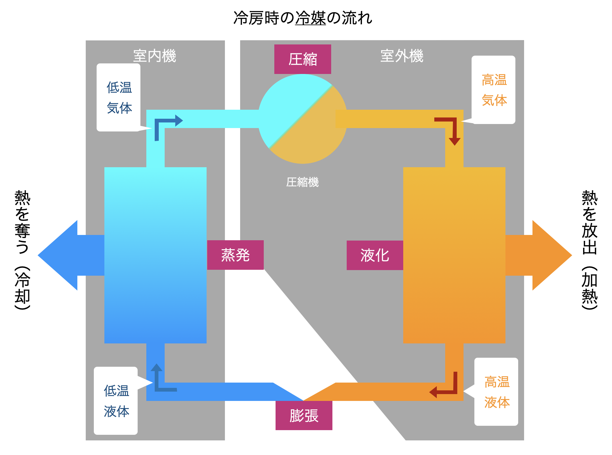

エアコンがどうして部屋を涼しくできるのか、考えてみたことはありますか？
ここでは、エアコンが冷える仕組みについて簡単に解説していきます。
Phase 3
エアコンの仕組み
突然ですが打ち水を知っていますか？打ち水は撒いた水が気体になる際に周りの空気から熱を奪う性質を利用しています。
実はこの打ち水と同じ性質をエアコンでも用いているのです。

Fig.5 冷房時の冷媒の流れ
エアコンの仕組みは、簡単に右図の様に表せます。エアコンは室内機、室外機、それを繋ぐ冷媒管で構成されています。
また、エアコンではフロンという冷媒が打ち水での水の役割を果たしています。冷媒が蒸発して気体になったり液体に戻ったりする事でエアコンは機能しているのです。
ここからは、冷媒の流れに沿ってエアコンの仕組みを解説していきます。ここで重要となるのは冷媒の温度と状態なので、その部分を解説していきます。
(1)まず、冷たい液体の状態の冷媒が室内機に流れます。この冷媒が室内の暖かい空気と混ざり合うことで蒸発して気体になります。このときに打ち水のように空気が冷やされその冷たい空気が室内に放出されます。
(2)蒸発して気体となった冷媒は、圧縮機という部分を通ります。圧縮機では冷媒を圧縮し温度を急激に上昇させます(詳しくは次章で説明) 。この圧縮機の働きによって冷媒は高温の気体となります。
(3)この冷媒が今度は室外機に流れます。室外の空気と混ざり合いますが、冷媒の方が高温なので凝縮して液体に戻ります。このとき、逆に熱を外に放出します。
(4)凝縮して液体となった冷媒が今度は膨張弁を通過します。膨張弁では冷媒の圧力を下げることでさらに冷媒の温度を下げます。この膨張弁によって冷媒は再び冷たい液体に戻ります。
以上の(1)から(4)を循環することで、冷媒の状態変化によりエアコンとしての機能をはたすことができるのです。
まとめ
エアコンは打ち水と同じ原理で冷たい風を送っている。エアコンは室内機、室外機でセットとなっておりその間を冷媒が循環している。